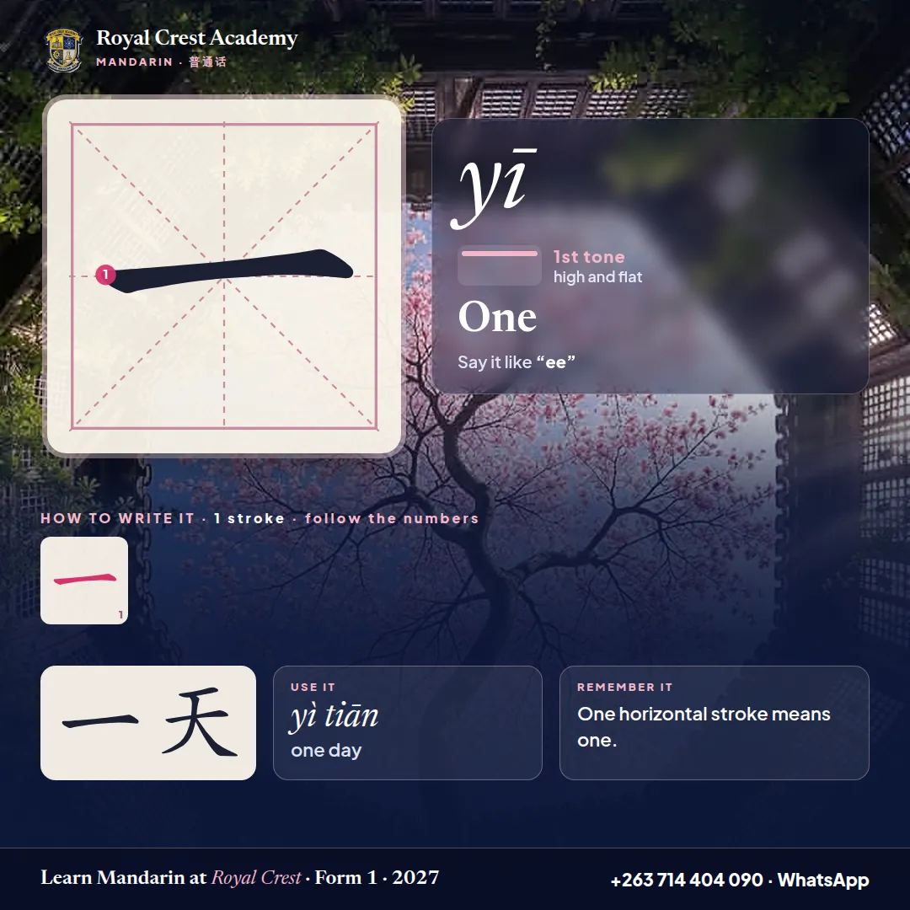
01/301 stroke
一 yī · one
🌸 Mandarin 30 · 01/30: 一 (yī) = one
🗣 Say it: yī, 1st tone (high and flat). Sounds like “ee”.
✍️ Write it: 1 stroke. Follow the numbers on the flyer, in order.
📖 Use it: 一天 (yì tiān) = one day
💡 Remember it: One horizontal stroke means one.
Practise it 5 times in your notebook, then say it out loud. Comment the character when you've written it! 👇
Learn Mandarin at Royal Crest Academy from Form 1. 🎓 2027 enrolment open · 📞 +263 714 404 090 (WhatsApp)
#RoyalCrestAcademy #Mandarin #LearnChinese #普通话 #汉字 #Mandarin30 #Bikita #Masvingo
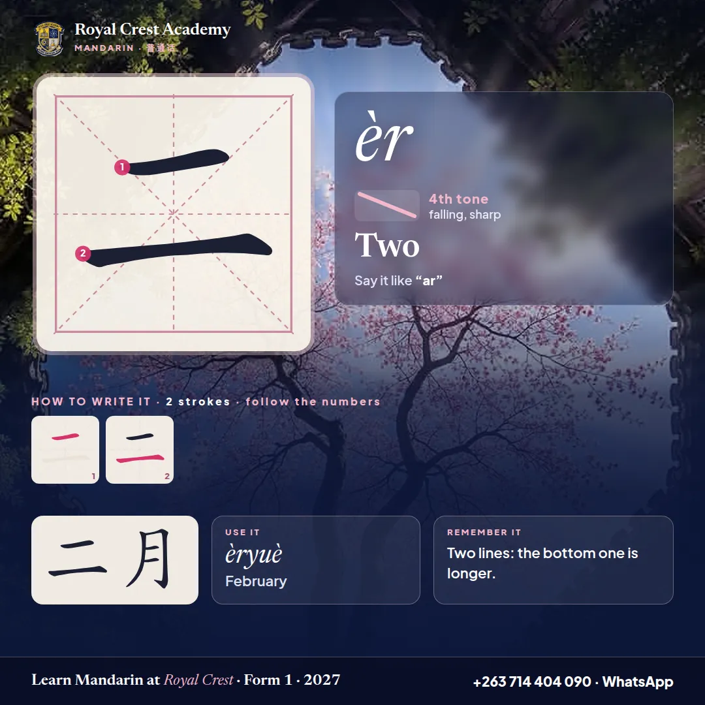
02/302 strokes
二 èr · two
🌸 Mandarin 30 · 02/30: 二 (èr) = two
🗣 Say it: èr, 4th tone (falling). Sounds like “ar”.
✍️ Write it: 2 strokes. Follow the numbers on the flyer, in order.
📖 Use it: 二月 (èryuè) = February
💡 Remember it: Two lines: the bottom one is longer.
Practise it 5 times in your notebook, then say it out loud. Comment the character when you've written it! 👇
Learn Mandarin at Royal Crest Academy from Form 1. 🎓 2027 enrolment open · 📞 +263 714 404 090 (WhatsApp)
#RoyalCrestAcademy #Mandarin #LearnChinese #普通话 #汉字 #Mandarin30 #Bikita #Masvingo
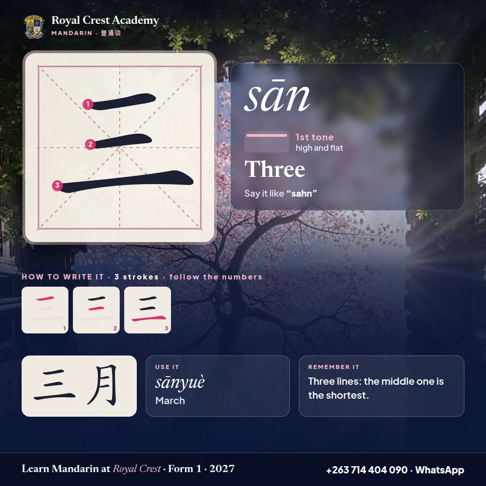
03/303 strokes
三 sān · three
🌸 Mandarin 30 · 03/30: 三 (sān) = three
🗣 Say it: sān, 1st tone (high and flat). Sounds like “sahn”.
✍️ Write it: 3 strokes. Follow the numbers on the flyer, in order.
📖 Use it: 三月 (sānyuè) = March
💡 Remember it: Three lines: the middle one is the shortest.
Practise it 5 times in your notebook, then say it out loud. Comment the character when you've written it! 👇
Learn Mandarin at Royal Crest Academy from Form 1. 🎓 2027 enrolment open · 📞 +263 714 404 090 (WhatsApp)
#RoyalCrestAcademy #Mandarin #LearnChinese #普通话 #汉字 #Mandarin30 #Bikita #Masvingo
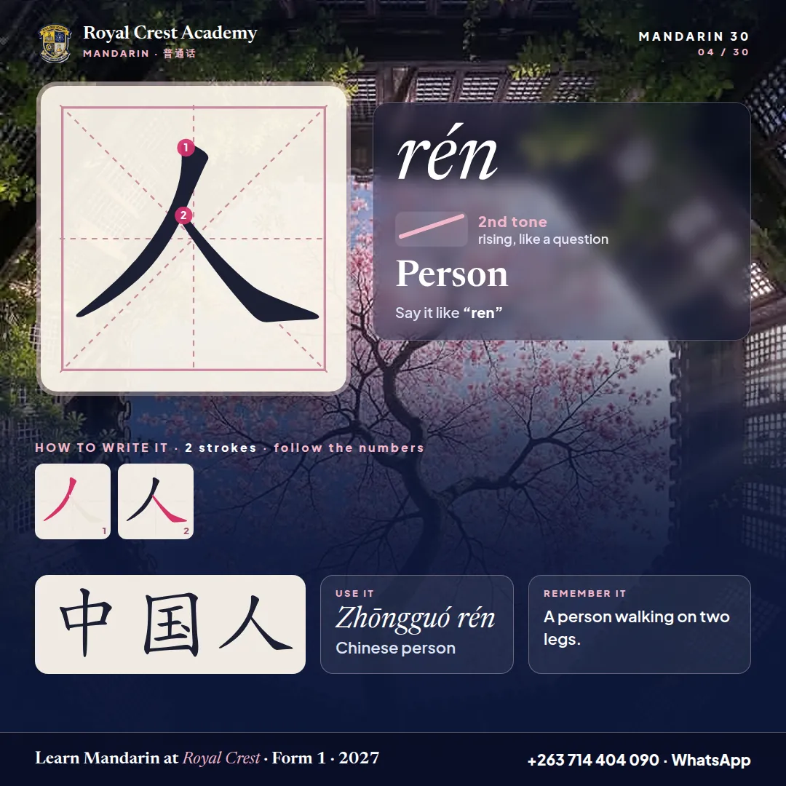
04/302 strokes
人 rén · person
🌸 Mandarin 30 · 04/30: 人 (rén) = person
🗣 Say it: rén, 2nd tone (rising). Sounds like “ren”.
✍️ Write it: 2 strokes. Follow the numbers on the flyer, in order.
📖 Use it: 中国人 (Zhōngguó rén) = Chinese person
💡 Remember it: A person walking on two legs.
Practise it 5 times in your notebook, then say it out loud. Comment the character when you've written it! 👇
Learn Mandarin at Royal Crest Academy from Form 1. 🎓 2027 enrolment open · 📞 +263 714 404 090 (WhatsApp)
#RoyalCrestAcademy #Mandarin #LearnChinese #普通话 #汉字 #Mandarin30 #Bikita #Masvingo
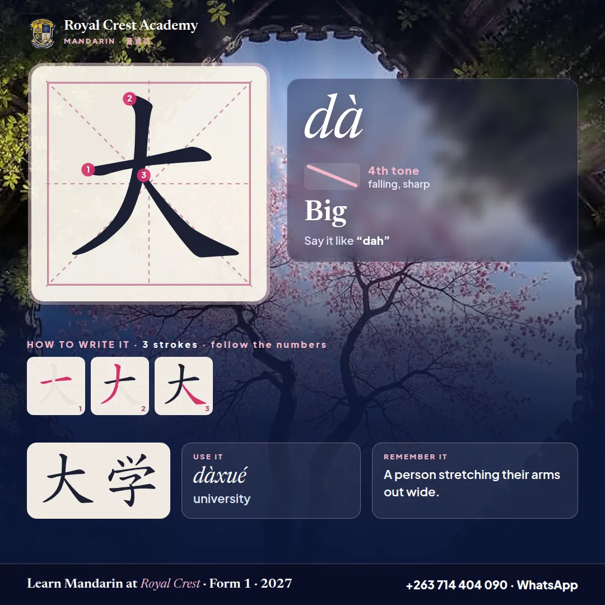
05/303 strokes
大 dà · big
🌸 Mandarin 30 · 05/30: 大 (dà) = big
🗣 Say it: dà, 4th tone (falling). Sounds like “dah”.
✍️ Write it: 3 strokes. Follow the numbers on the flyer, in order.
📖 Use it: 大学 (dàxué) = university
💡 Remember it: A person stretching their arms out wide.
Practise it 5 times in your notebook, then say it out loud. Comment the character when you've written it! 👇
Learn Mandarin at Royal Crest Academy from Form 1. 🎓 2027 enrolment open · 📞 +263 714 404 090 (WhatsApp)
#RoyalCrestAcademy #Mandarin #LearnChinese #普通话 #汉字 #Mandarin30 #Bikita #Masvingo
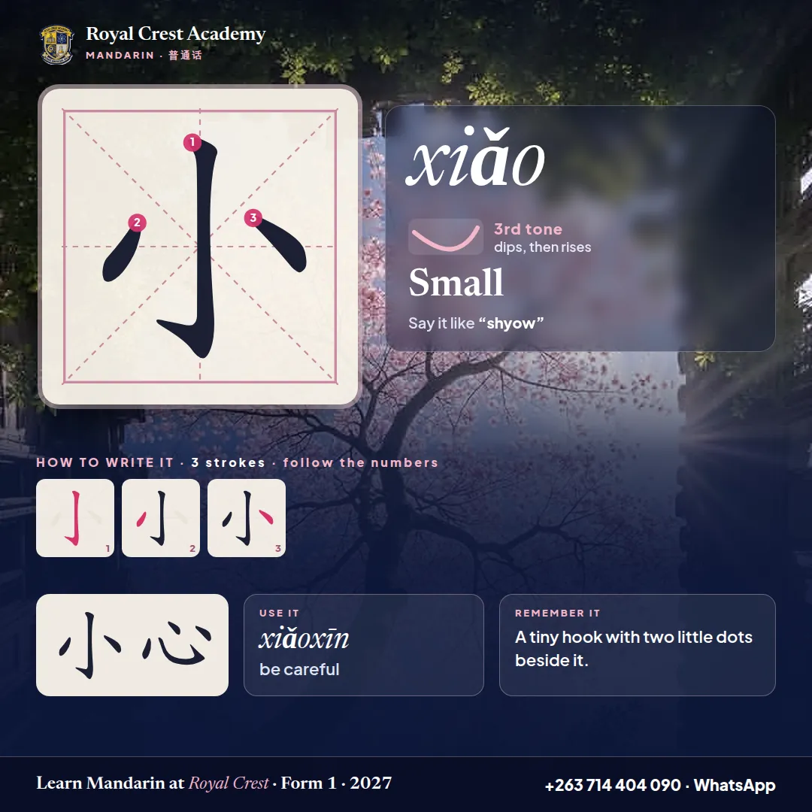
06/303 strokes
小 xiǎo · small
🌸 Mandarin 30 · 06/30: 小 (xiǎo) = small
🗣 Say it: xiǎo, 3rd tone (dips, then rises). Sounds like “shyow”.
✍️ Write it: 3 strokes. Follow the numbers on the flyer, in order.
📖 Use it: 小心 (xiǎoxīn) = be careful
💡 Remember it: A tiny hook with two little dots beside it.
Practise it 5 times in your notebook, then say it out loud. Comment the character when you've written it! 👇
Learn Mandarin at Royal Crest Academy from Form 1. 🎓 2027 enrolment open · 📞 +263 714 404 090 (WhatsApp)
#RoyalCrestAcademy #Mandarin #LearnChinese #普通话 #汉字 #Mandarin30 #Bikita #Masvingo
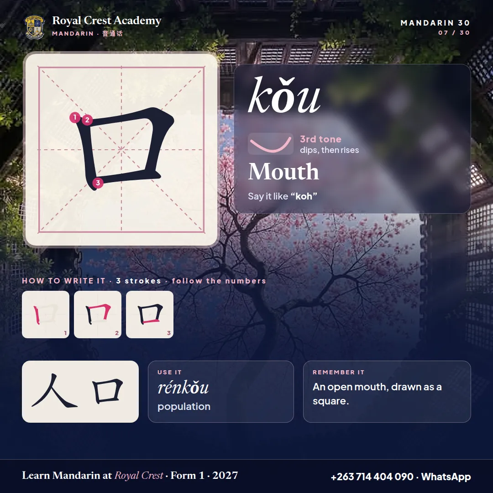
07/303 strokes
口 kǒu · mouth
🌸 Mandarin 30 · 07/30: 口 (kǒu) = mouth
🗣 Say it: kǒu, 3rd tone (dips, then rises). Sounds like “koh”.
✍️ Write it: 3 strokes. Follow the numbers on the flyer, in order.
📖 Use it: 人口 (rénkǒu) = population
💡 Remember it: An open mouth, drawn as a square.
Practise it 5 times in your notebook, then say it out loud. Comment the character when you've written it! 👇
Learn Mandarin at Royal Crest Academy from Form 1. 🎓 2027 enrolment open · 📞 +263 714 404 090 (WhatsApp)
#RoyalCrestAcademy #Mandarin #LearnChinese #普通话 #汉字 #Mandarin30 #Bikita #Masvingo
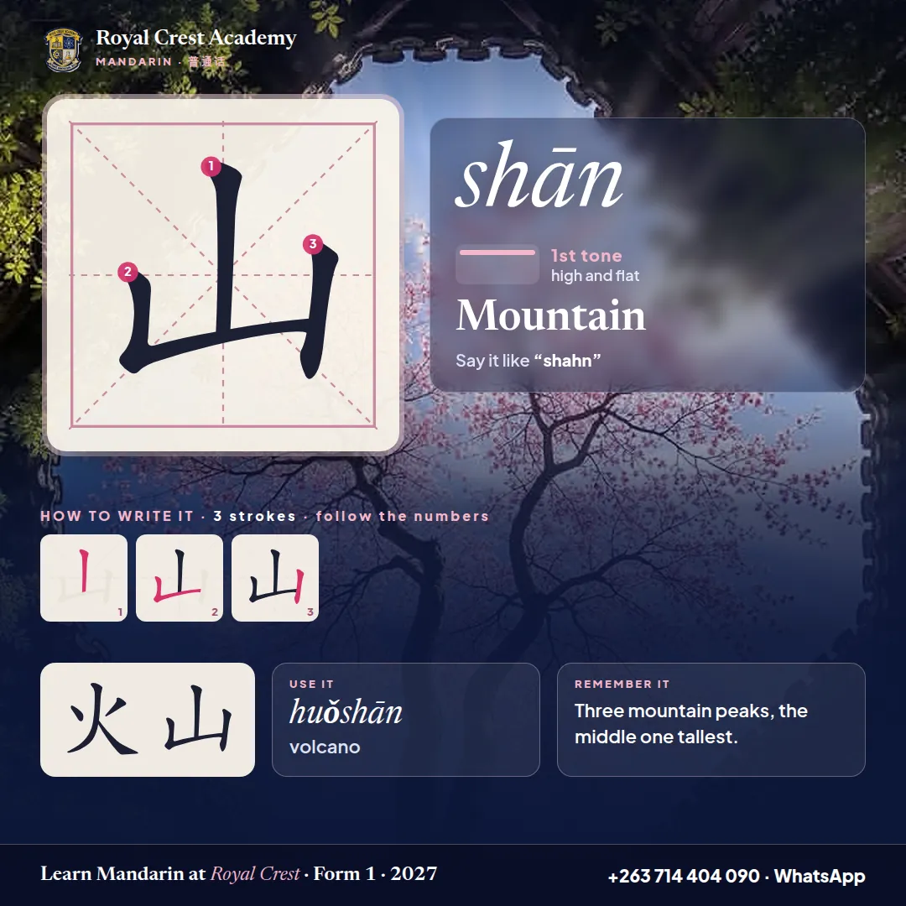
08/303 strokes
山 shān · mountain
🌸 Mandarin 30 · 08/30: 山 (shān) = mountain
🗣 Say it: shān, 1st tone (high and flat). Sounds like “shahn”.
✍️ Write it: 3 strokes. Follow the numbers on the flyer, in order.
📖 Use it: 火山 (huǒshān) = volcano
💡 Remember it: Three mountain peaks, the middle one tallest.
Practise it 5 times in your notebook, then say it out loud. Comment the character when you've written it! 👇
Learn Mandarin at Royal Crest Academy from Form 1. 🎓 2027 enrolment open · 📞 +263 714 404 090 (WhatsApp)
#RoyalCrestAcademy #Mandarin #LearnChinese #普通话 #汉字 #Mandarin30 #Bikita #Masvingo
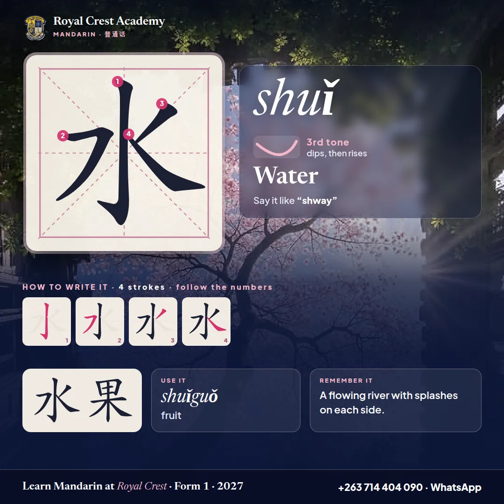
09/304 strokes
水 shuǐ · water
🌸 Mandarin 30 · 09/30: 水 (shuǐ) = water
🗣 Say it: shuǐ, 3rd tone (dips, then rises). Sounds like “shway”.
✍️ Write it: 4 strokes. Follow the numbers on the flyer, in order.
📖 Use it: 水果 (shuǐguǒ) = fruit
💡 Remember it: A flowing river with splashes on each side.
Practise it 5 times in your notebook, then say it out loud. Comment the character when you've written it! 👇
Learn Mandarin at Royal Crest Academy from Form 1. 🎓 2027 enrolment open · 📞 +263 714 404 090 (WhatsApp)
#RoyalCrestAcademy #Mandarin #LearnChinese #普通话 #汉字 #Mandarin30 #Bikita #Masvingo
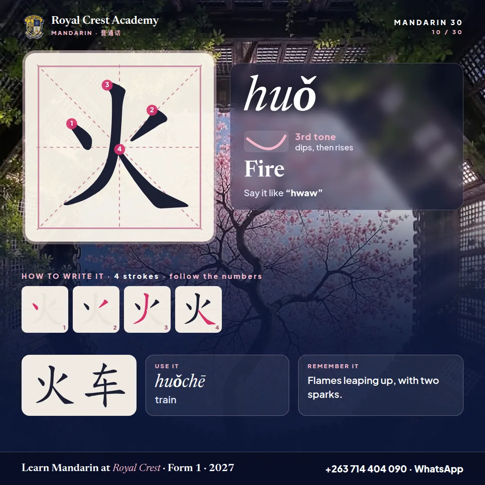
10/304 strokes
火 huǒ · fire
🌸 Mandarin 30 · 10/30: 火 (huǒ) = fire
🗣 Say it: huǒ, 3rd tone (dips, then rises). Sounds like “hwaw”.
✍️ Write it: 4 strokes. Follow the numbers on the flyer, in order.
📖 Use it: 火车 (huǒchē) = train
💡 Remember it: Flames leaping up, with two sparks.
Practise it 5 times in your notebook, then say it out loud. Comment the character when you've written it! 👇
Learn Mandarin at Royal Crest Academy from Form 1. 🎓 2027 enrolment open · 📞 +263 714 404 090 (WhatsApp)
#RoyalCrestAcademy #Mandarin #LearnChinese #普通话 #汉字 #Mandarin30 #Bikita #Masvingo
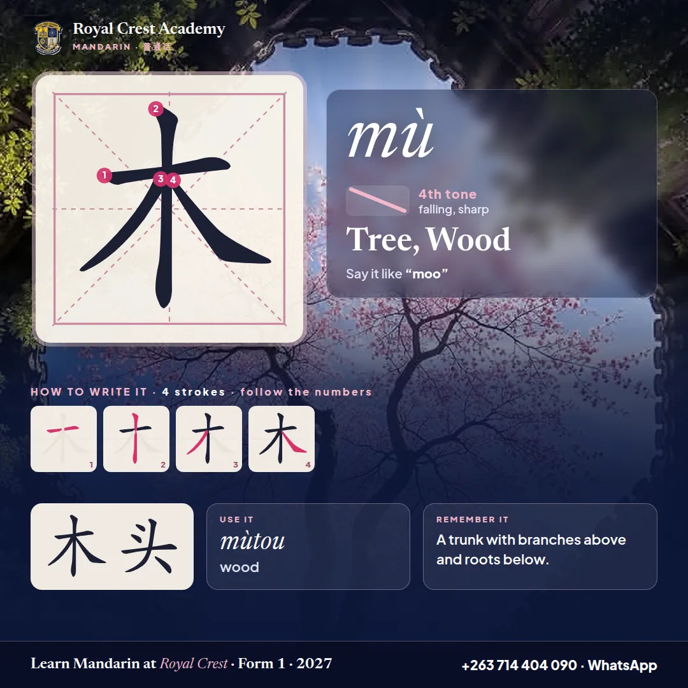
11/304 strokes
木 mù · tree, wood
🌸 Mandarin 30 · 11/30: 木 (mù) = tree, wood
🗣 Say it: mù, 4th tone (falling). Sounds like “moo”.
✍️ Write it: 4 strokes. Follow the numbers on the flyer, in order.
📖 Use it: 木头 (mùtou) = wood
💡 Remember it: A trunk with branches above and roots below.
Practise it 5 times in your notebook, then say it out loud. Comment the character when you've written it! 👇
Learn Mandarin at Royal Crest Academy from Form 1. 🎓 2027 enrolment open · 📞 +263 714 404 090 (WhatsApp)
#RoyalCrestAcademy #Mandarin #LearnChinese #普通话 #汉字 #Mandarin30 #Bikita #Masvingo
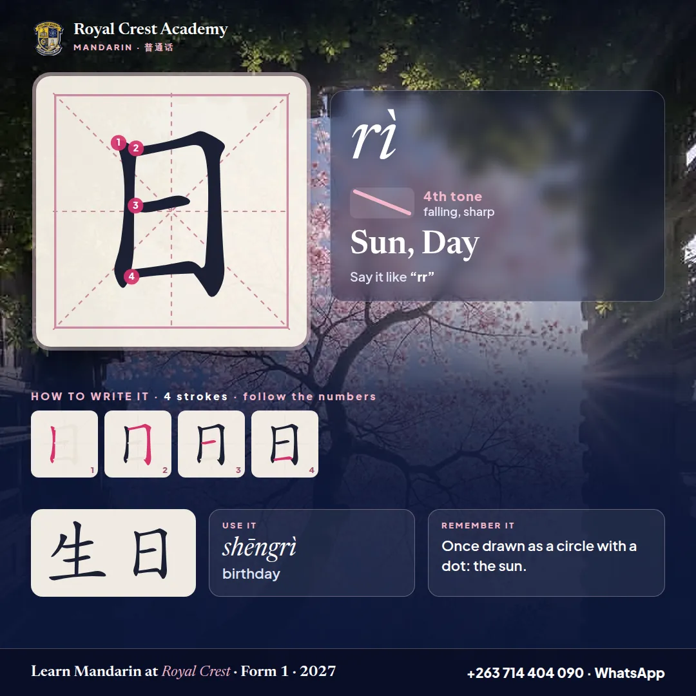
12/304 strokes
日 rì · sun, day
🌸 Mandarin 30 · 12/30: 日 (rì) = sun, day
🗣 Say it: rì, 4th tone (falling). Sounds like “rr”.
✍️ Write it: 4 strokes. Follow the numbers on the flyer, in order.
📖 Use it: 生日 (shēngrì) = birthday
💡 Remember it: Once drawn as a circle with a dot: the sun.
Practise it 5 times in your notebook, then say it out loud. Comment the character when you've written it! 👇
Learn Mandarin at Royal Crest Academy from Form 1. 🎓 2027 enrolment open · 📞 +263 714 404 090 (WhatsApp)
#RoyalCrestAcademy #Mandarin #LearnChinese #普通话 #汉字 #Mandarin30 #Bikita #Masvingo
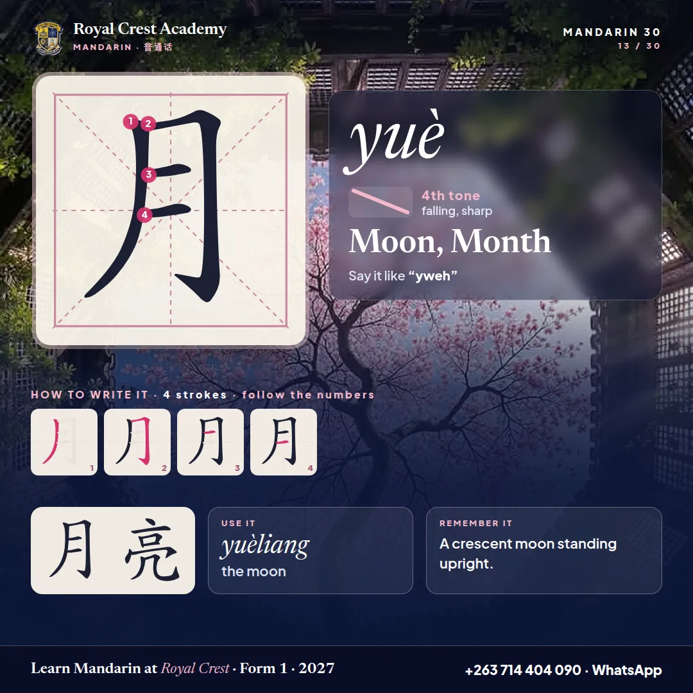
13/304 strokes
月 yuè · moon, month
🌸 Mandarin 30 · 13/30: 月 (yuè) = moon, month
🗣 Say it: yuè, 4th tone (falling). Sounds like “yweh”.
✍️ Write it: 4 strokes. Follow the numbers on the flyer, in order.
📖 Use it: 月亮 (yuèliang) = the moon
💡 Remember it: A crescent moon standing upright.
Practise it 5 times in your notebook, then say it out loud. Comment the character when you've written it! 👇
Learn Mandarin at Royal Crest Academy from Form 1. 🎓 2027 enrolment open · 📞 +263 714 404 090 (WhatsApp)
#RoyalCrestAcademy #Mandarin #LearnChinese #普通话 #汉字 #Mandarin30 #Bikita #Masvingo
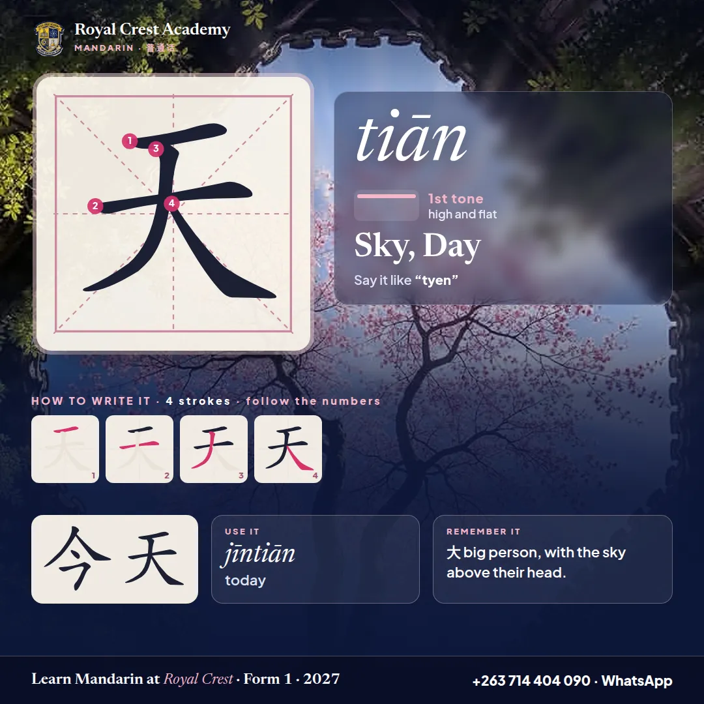
14/304 strokes
天 tiān · sky, day
🌸 Mandarin 30 · 14/30: 天 (tiān) = sky, day
🗣 Say it: tiān, 1st tone (high and flat). Sounds like “tyen”.
✍️ Write it: 4 strokes. Follow the numbers on the flyer, in order.
📖 Use it: 今天 (jīntiān) = today
💡 Remember it: 大 big person, with the sky above their head.
Practise it 5 times in your notebook, then say it out loud. Comment the character when you've written it! 👇
Learn Mandarin at Royal Crest Academy from Form 1. 🎓 2027 enrolment open · 📞 +263 714 404 090 (WhatsApp)
#RoyalCrestAcademy #Mandarin #LearnChinese #普通话 #汉字 #Mandarin30 #Bikita #Masvingo
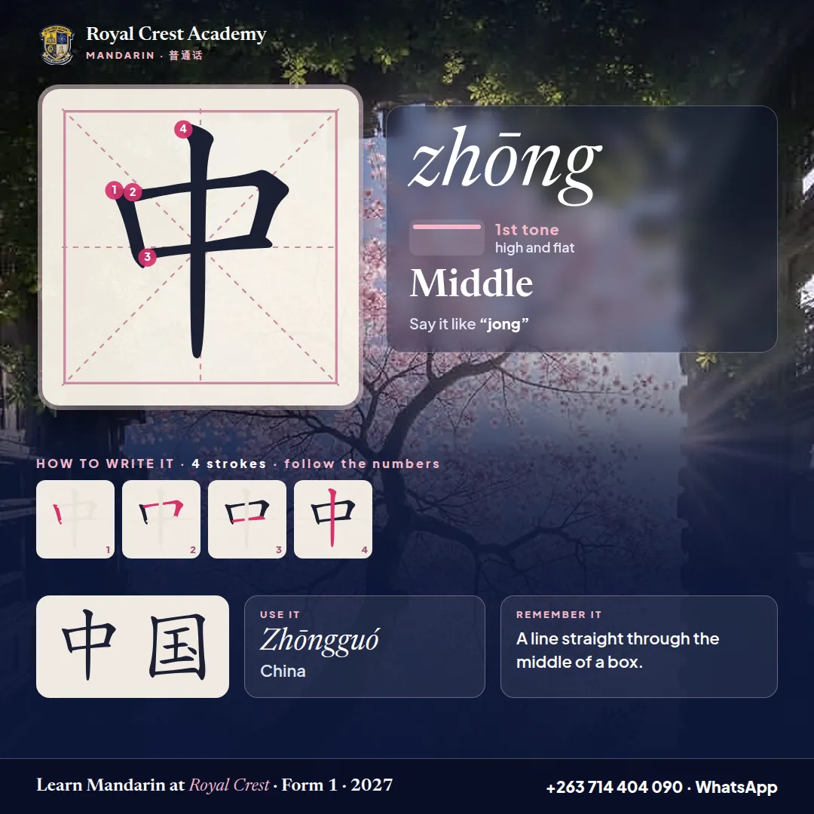
15/304 strokes
中 zhōng · middle
🌸 Mandarin 30 · 15/30: 中 (zhōng) = middle
🗣 Say it: zhōng, 1st tone (high and flat). Sounds like “jong”.
✍️ Write it: 4 strokes. Follow the numbers on the flyer, in order.
📖 Use it: 中国 (Zhōngguó) = China
💡 Remember it: A line straight through the middle of a box.
Practise it 5 times in your notebook, then say it out loud. Comment the character when you've written it! 👇
Learn Mandarin at Royal Crest Academy from Form 1. 🎓 2027 enrolment open · 📞 +263 714 404 090 (WhatsApp)
#RoyalCrestAcademy #Mandarin #LearnChinese #普通话 #汉字 #Mandarin30 #Bikita #Masvingo
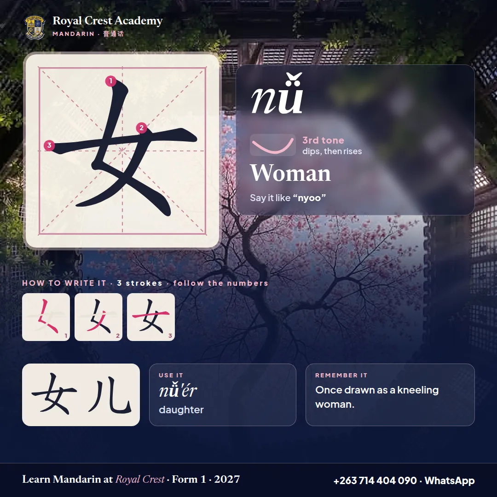
16/303 strokes
女 nǚ · woman
🌸 Mandarin 30 · 16/30: 女 (nǚ) = woman
🗣 Say it: nǚ, 3rd tone (dips, then rises). Sounds like “nyoo”.
✍️ Write it: 3 strokes. Follow the numbers on the flyer, in order.
📖 Use it: 女儿 (nǚ'ér) = daughter
💡 Remember it: Once drawn as a kneeling woman.
Practise it 5 times in your notebook, then say it out loud. Comment the character when you've written it! 👇
Learn Mandarin at Royal Crest Academy from Form 1. 🎓 2027 enrolment open · 📞 +263 714 404 090 (WhatsApp)
#RoyalCrestAcademy #Mandarin #LearnChinese #普通话 #汉字 #Mandarin30 #Bikita #Masvingo
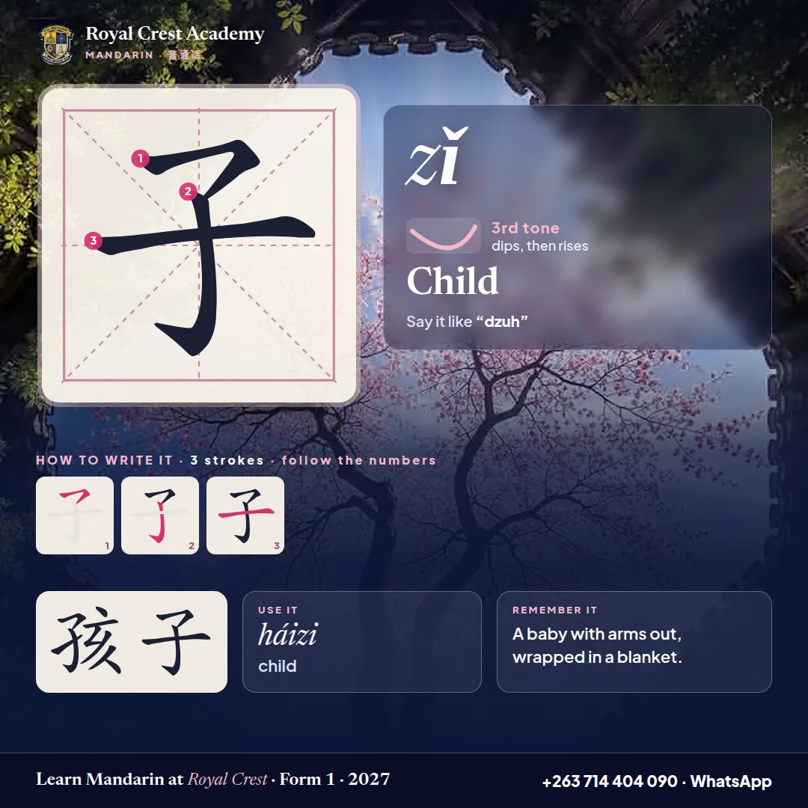
17/303 strokes
子 zǐ · child
🌸 Mandarin 30 · 17/30: 子 (zǐ) = child
🗣 Say it: zǐ, 3rd tone (dips, then rises). Sounds like “dzuh”.
✍️ Write it: 3 strokes. Follow the numbers on the flyer, in order.
📖 Use it: 孩子 (háizi) = child
💡 Remember it: A baby with arms out, wrapped in a blanket.
Practise it 5 times in your notebook, then say it out loud. Comment the character when you've written it! 👇
Learn Mandarin at Royal Crest Academy from Form 1. 🎓 2027 enrolment open · 📞 +263 714 404 090 (WhatsApp)
#RoyalCrestAcademy #Mandarin #LearnChinese #普通话 #汉字 #Mandarin30 #Bikita #Masvingo
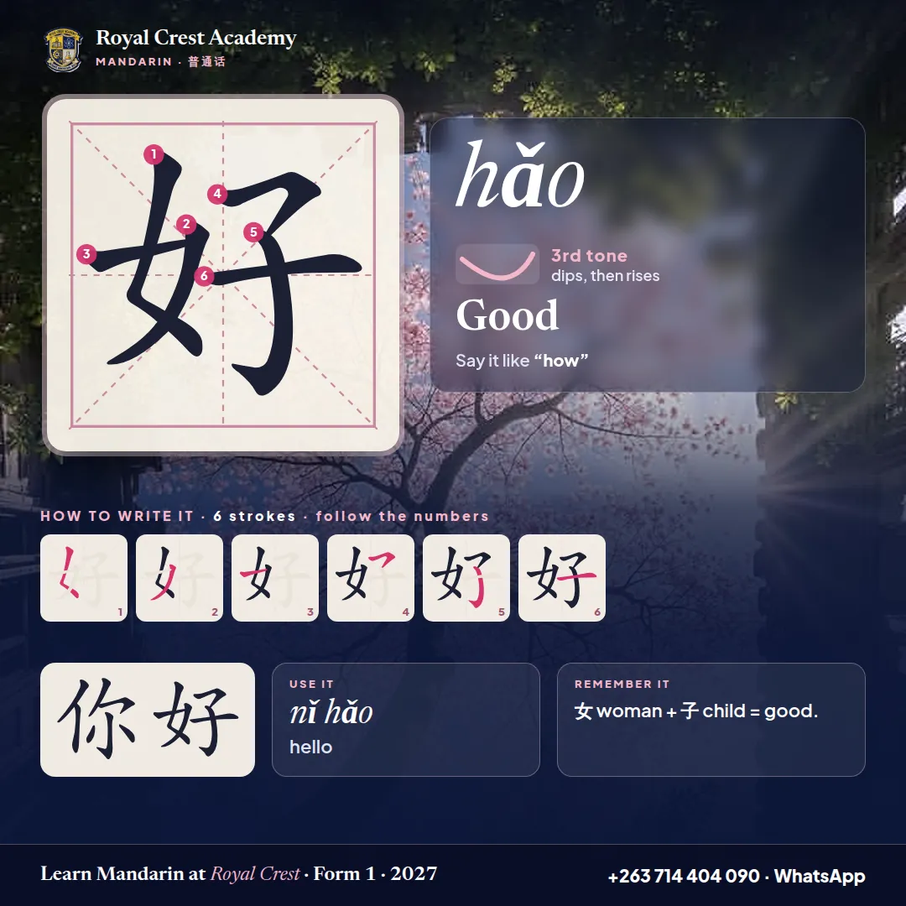
18/306 strokes
好 hǎo · good
🌸 Mandarin 30 · 18/30: 好 (hǎo) = good
🗣 Say it: hǎo, 3rd tone (dips, then rises). Sounds like “how”.
✍️ Write it: 6 strokes. Follow the numbers on the flyer, in order.
📖 Use it: 你好 (nǐ hǎo) = hello
💡 Remember it: 女 woman + 子 child = good.
Practise it 5 times in your notebook, then say it out loud. Comment the character when you've written it! 👇
Learn Mandarin at Royal Crest Academy from Form 1. 🎓 2027 enrolment open · 📞 +263 714 404 090 (WhatsApp)
#RoyalCrestAcademy #Mandarin #LearnChinese #普通话 #汉字 #Mandarin30 #Bikita #Masvingo
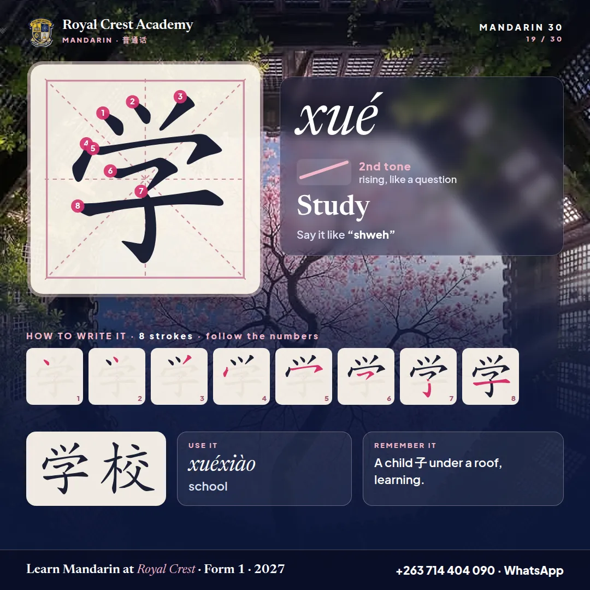
19/308 strokes
学 xué · study
🌸 Mandarin 30 · 19/30: 学 (xué) = study
🗣 Say it: xué, 2nd tone (rising). Sounds like “shweh”.
✍️ Write it: 8 strokes. Follow the numbers on the flyer, in order.
📖 Use it: 学校 (xuéxiào) = school
💡 Remember it: A child 子 under a roof, learning.
Practise it 5 times in your notebook, then say it out loud. Comment the character when you've written it! 👇
Learn Mandarin at Royal Crest Academy from Form 1. 🎓 2027 enrolment open · 📞 +263 714 404 090 (WhatsApp)
#RoyalCrestAcademy #Mandarin #LearnChinese #普通话 #汉字 #Mandarin30 #Bikita #Masvingo
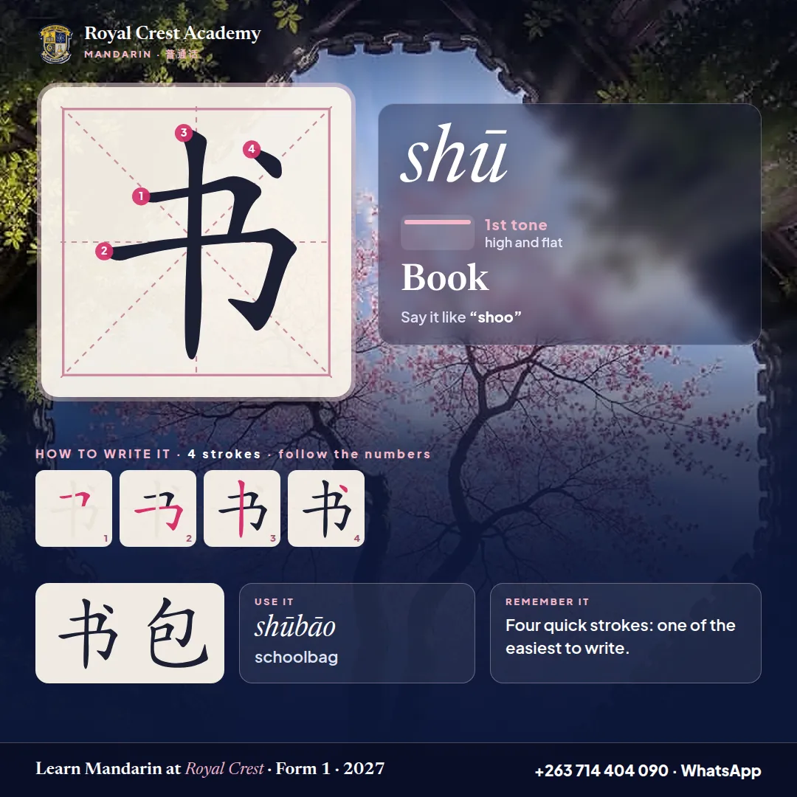
20/304 strokes
书 shū · book
🌸 Mandarin 30 · 20/30: 书 (shū) = book
🗣 Say it: shū, 1st tone (high and flat). Sounds like “shoo”.
✍️ Write it: 4 strokes. Follow the numbers on the flyer, in order.
📖 Use it: 书包 (shūbāo) = schoolbag
💡 Remember it: Four quick strokes: one of the easiest to write.
Practise it 5 times in your notebook, then say it out loud. Comment the character when you've written it! 👇
Learn Mandarin at Royal Crest Academy from Form 1. 🎓 2027 enrolment open · 📞 +263 714 404 090 (WhatsApp)
#RoyalCrestAcademy #Mandarin #LearnChinese #普通话 #汉字 #Mandarin30 #Bikita #Masvingo
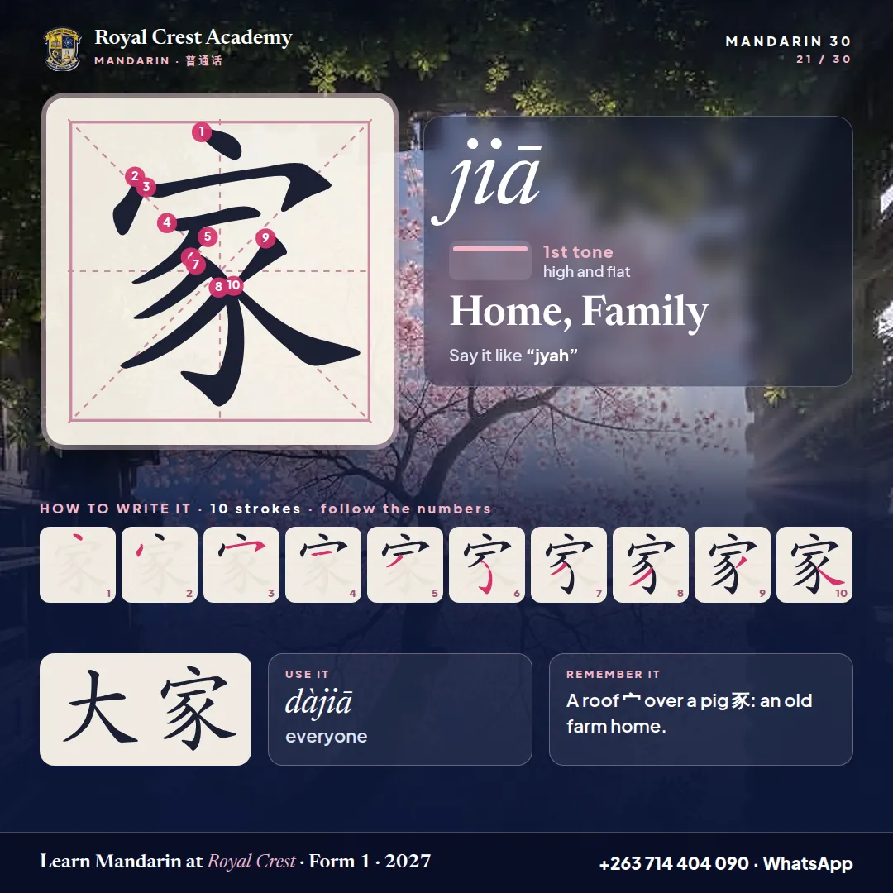
21/3010 strokes
家 jiā · home, family
🌸 Mandarin 30 · 21/30: 家 (jiā) = home, family
🗣 Say it: jiā, 1st tone (high and flat). Sounds like “jyah”.
✍️ Write it: 10 strokes. Follow the numbers on the flyer, in order.
📖 Use it: 大家 (dàjiā) = everyone
💡 Remember it: A roof 宀 over a pig 豕: an old farm home.
Practise it 5 times in your notebook, then say it out loud. Comment the character when you've written it! 👇
Learn Mandarin at Royal Crest Academy from Form 1. 🎓 2027 enrolment open · 📞 +263 714 404 090 (WhatsApp)
#RoyalCrestAcademy #Mandarin #LearnChinese #普通话 #汉字 #Mandarin30 #Bikita #Masvingo
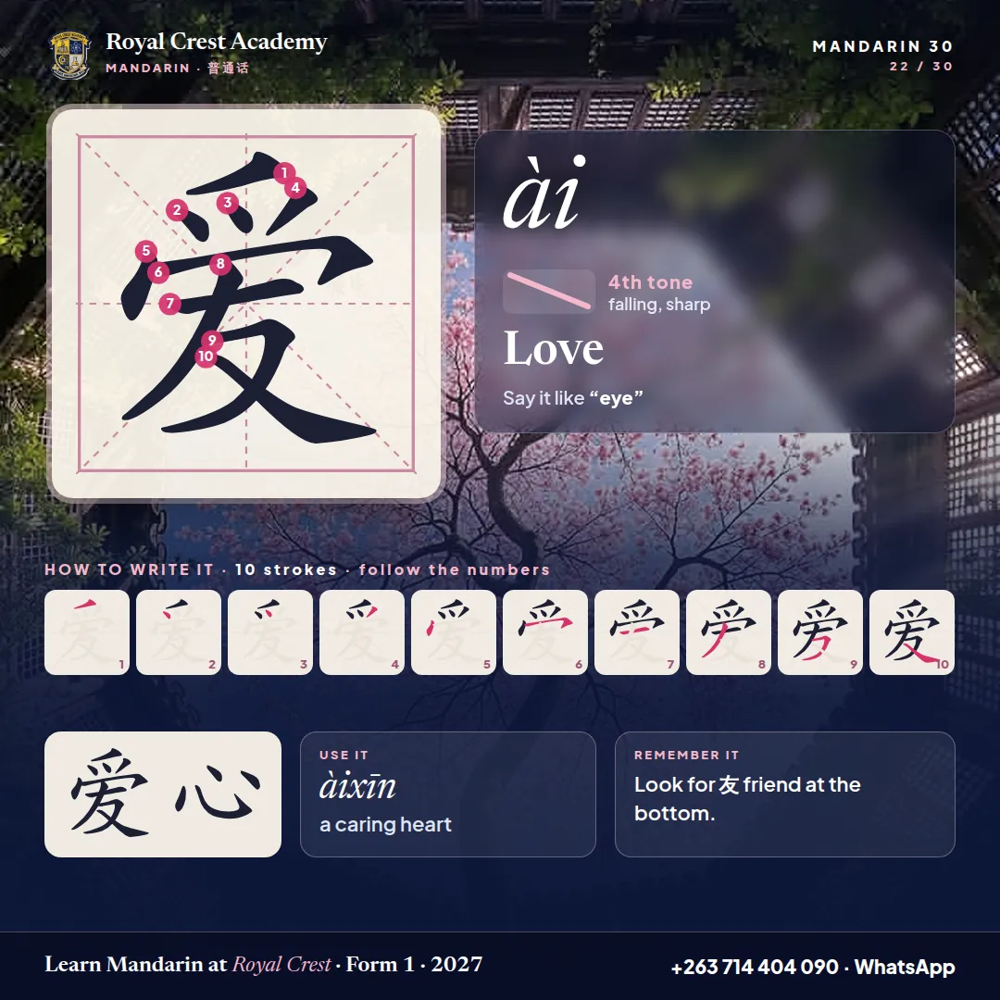
22/3010 strokes
爱 ài · love
🌸 Mandarin 30 · 22/30: 爱 (ài) = love
🗣 Say it: ài, 4th tone (falling). Sounds like “eye”.
✍️ Write it: 10 strokes. Follow the numbers on the flyer, in order.
📖 Use it: 爱心 (àixīn) = a caring heart
💡 Remember it: Look for 友 friend at the bottom.
Practise it 5 times in your notebook, then say it out loud. Comment the character when you've written it! 👇
Learn Mandarin at Royal Crest Academy from Form 1. 🎓 2027 enrolment open · 📞 +263 714 404 090 (WhatsApp)
#RoyalCrestAcademy #Mandarin #LearnChinese #普通话 #汉字 #Mandarin30 #Bikita #Masvingo
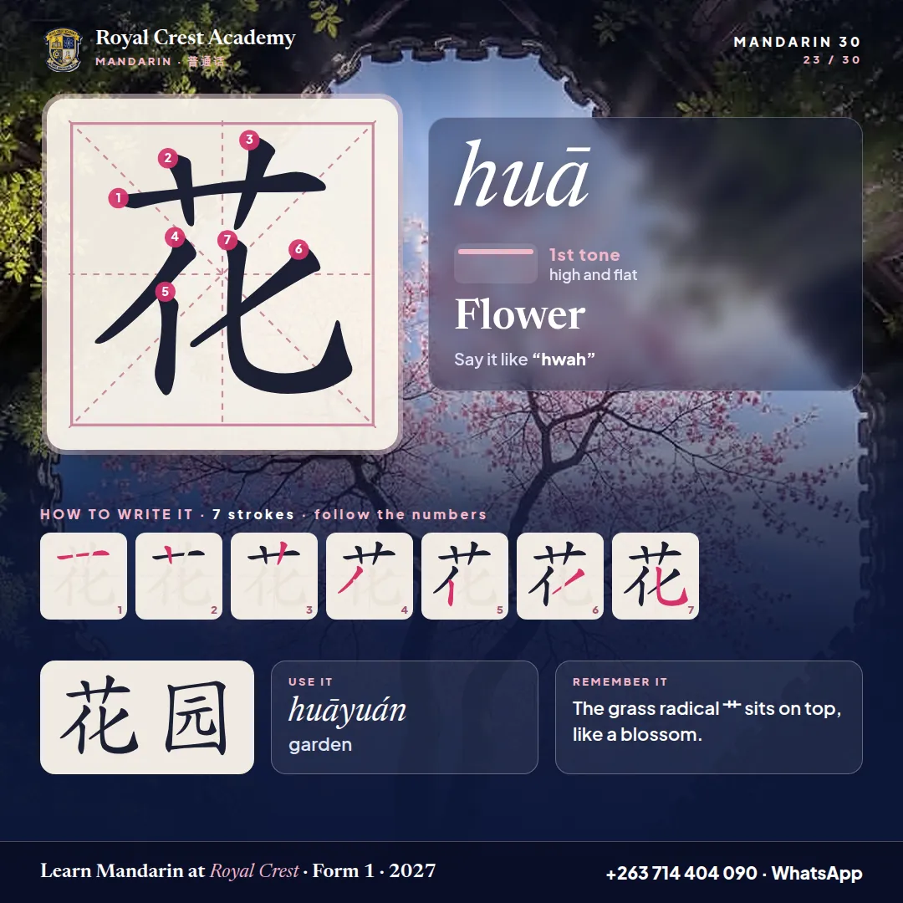
23/307 strokes
花 huā · flower
🌸 Mandarin 30 · 23/30: 花 (huā) = flower
🗣 Say it: huā, 1st tone (high and flat). Sounds like “hwah”.
✍️ Write it: 7 strokes. Follow the numbers on the flyer, in order.
📖 Use it: 花园 (huāyuán) = garden
💡 Remember it: The grass radical 艹 sits on top, like a blossom.
Practise it 5 times in your notebook, then say it out loud. Comment the character when you've written it! 👇
Learn Mandarin at Royal Crest Academy from Form 1. 🎓 2027 enrolment open · 📞 +263 714 404 090 (WhatsApp)
#RoyalCrestAcademy #Mandarin #LearnChinese #普通话 #汉字 #Mandarin30 #Bikita #Masvingo
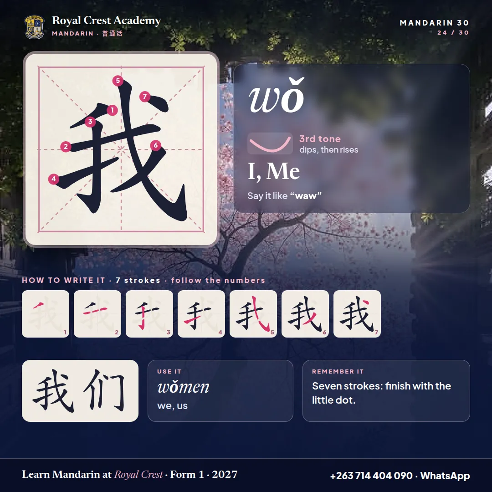
24/307 strokes
我 wǒ · I, me
🌸 Mandarin 30 · 24/30: 我 (wǒ) = I, me
🗣 Say it: wǒ, 3rd tone (dips, then rises). Sounds like “waw”.
✍️ Write it: 7 strokes. Follow the numbers on the flyer, in order.
📖 Use it: 我们 (wǒmen) = we, us
💡 Remember it: Seven strokes: finish with the little dot.
Practise it 5 times in your notebook, then say it out loud. Comment the character when you've written it! 👇
Learn Mandarin at Royal Crest Academy from Form 1. 🎓 2027 enrolment open · 📞 +263 714 404 090 (WhatsApp)
#RoyalCrestAcademy #Mandarin #LearnChinese #普通话 #汉字 #Mandarin30 #Bikita #Masvingo
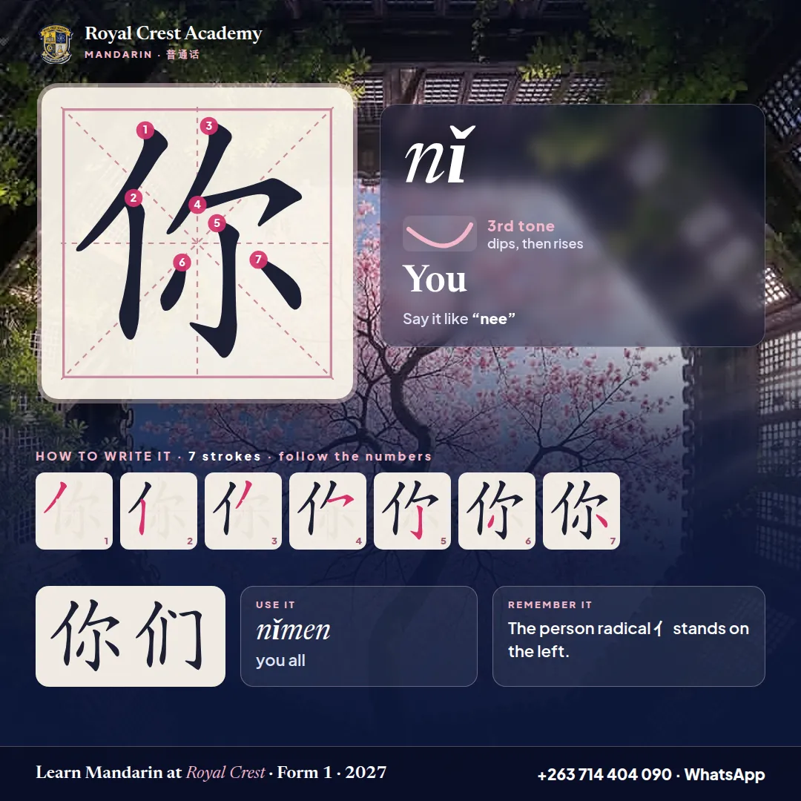
25/307 strokes
你 nǐ · you
🌸 Mandarin 30 · 25/30: 你 (nǐ) = you
🗣 Say it: nǐ, 3rd tone (dips, then rises). Sounds like “nee”.
✍️ Write it: 7 strokes. Follow the numbers on the flyer, in order.
📖 Use it: 你们 (nǐmen) = you all
💡 Remember it: The person radical 亻 stands on the left.
Practise it 5 times in your notebook, then say it out loud. Comment the character when you've written it! 👇
Learn Mandarin at Royal Crest Academy from Form 1. 🎓 2027 enrolment open · 📞 +263 714 404 090 (WhatsApp)
#RoyalCrestAcademy #Mandarin #LearnChinese #普通话 #汉字 #Mandarin30 #Bikita #Masvingo
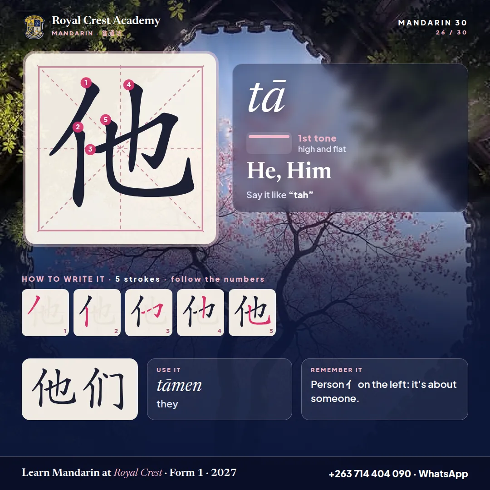
26/305 strokes
他 tā · he, him
🌸 Mandarin 30 · 26/30: 他 (tā) = he, him
🗣 Say it: tā, 1st tone (high and flat). Sounds like “tah”.
✍️ Write it: 5 strokes. Follow the numbers on the flyer, in order.
📖 Use it: 他们 (tāmen) = they
💡 Remember it: Person 亻 on the left: it's about someone.
Practise it 5 times in your notebook, then say it out loud. Comment the character when you've written it! 👇
Learn Mandarin at Royal Crest Academy from Form 1. 🎓 2027 enrolment open · 📞 +263 714 404 090 (WhatsApp)
#RoyalCrestAcademy #Mandarin #LearnChinese #普通话 #汉字 #Mandarin30 #Bikita #Masvingo
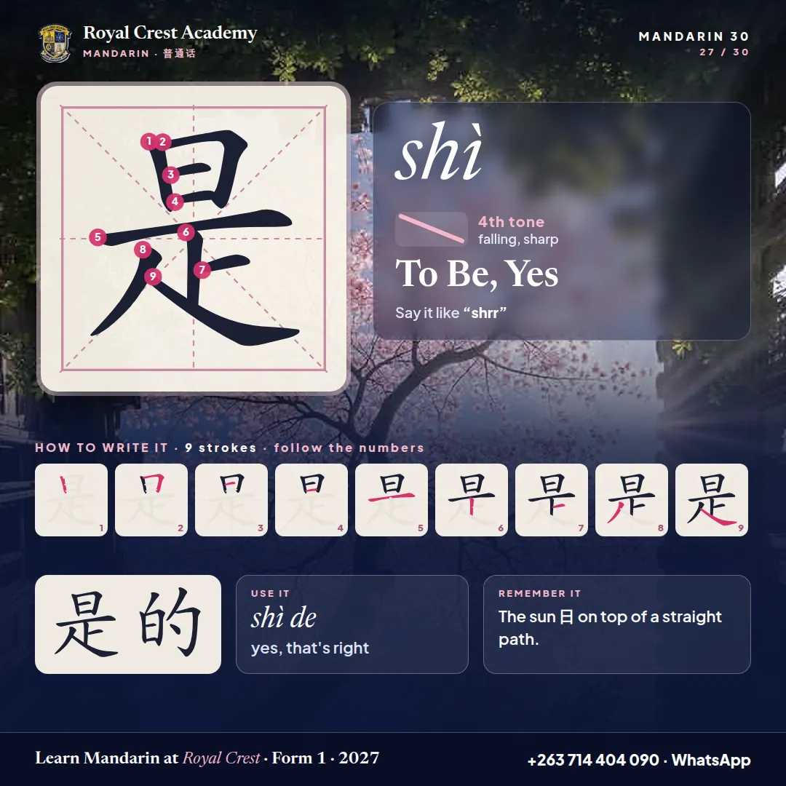
27/309 strokes
是 shì · to be, yes
🌸 Mandarin 30 · 27/30: 是 (shì) = to be, yes
🗣 Say it: shì, 4th tone (falling). Sounds like “shrr”.
✍️ Write it: 9 strokes. Follow the numbers on the flyer, in order.
📖 Use it: 是的 (shì de) = yes, that's right
💡 Remember it: The sun 日 on top of a straight path.
Practise it 5 times in your notebook, then say it out loud. Comment the character when you've written it! 👇
Learn Mandarin at Royal Crest Academy from Form 1. 🎓 2027 enrolment open · 📞 +263 714 404 090 (WhatsApp)
#RoyalCrestAcademy #Mandarin #LearnChinese #普通话 #汉字 #Mandarin30 #Bikita #Masvingo
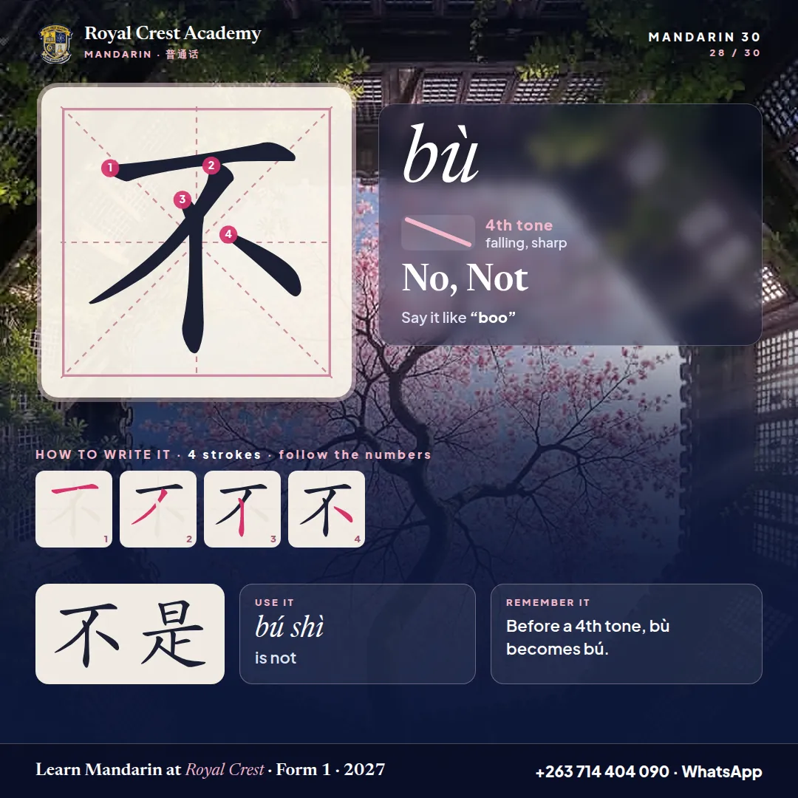
28/304 strokes
不 bù · no, not
🌸 Mandarin 30 · 28/30: 不 (bù) = no, not
🗣 Say it: bù, 4th tone (falling). Sounds like “boo”.
✍️ Write it: 4 strokes. Follow the numbers on the flyer, in order.
📖 Use it: 不是 (bú shì) = is not
💡 Remember it: Before a 4th tone, bù becomes bú.
Practise it 5 times in your notebook, then say it out loud. Comment the character when you've written it! 👇
Learn Mandarin at Royal Crest Academy from Form 1. 🎓 2027 enrolment open · 📞 +263 714 404 090 (WhatsApp)
#RoyalCrestAcademy #Mandarin #LearnChinese #普通话 #汉字 #Mandarin30 #Bikita #Masvingo
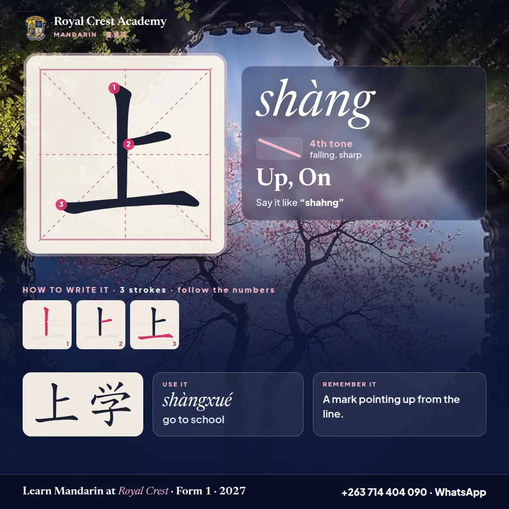
29/303 strokes
上 shàng · up, on
🌸 Mandarin 30 · 29/30: 上 (shàng) = up, on
🗣 Say it: shàng, 4th tone (falling). Sounds like “shahng”.
✍️ Write it: 3 strokes. Follow the numbers on the flyer, in order.
📖 Use it: 上学 (shàngxué) = go to school
💡 Remember it: A mark pointing up from the line.
Practise it 5 times in your notebook, then say it out loud. Comment the character when you've written it! 👇
Learn Mandarin at Royal Crest Academy from Form 1. 🎓 2027 enrolment open · 📞 +263 714 404 090 (WhatsApp)
#RoyalCrestAcademy #Mandarin #LearnChinese #普通话 #汉字 #Mandarin30 #Bikita #Masvingo
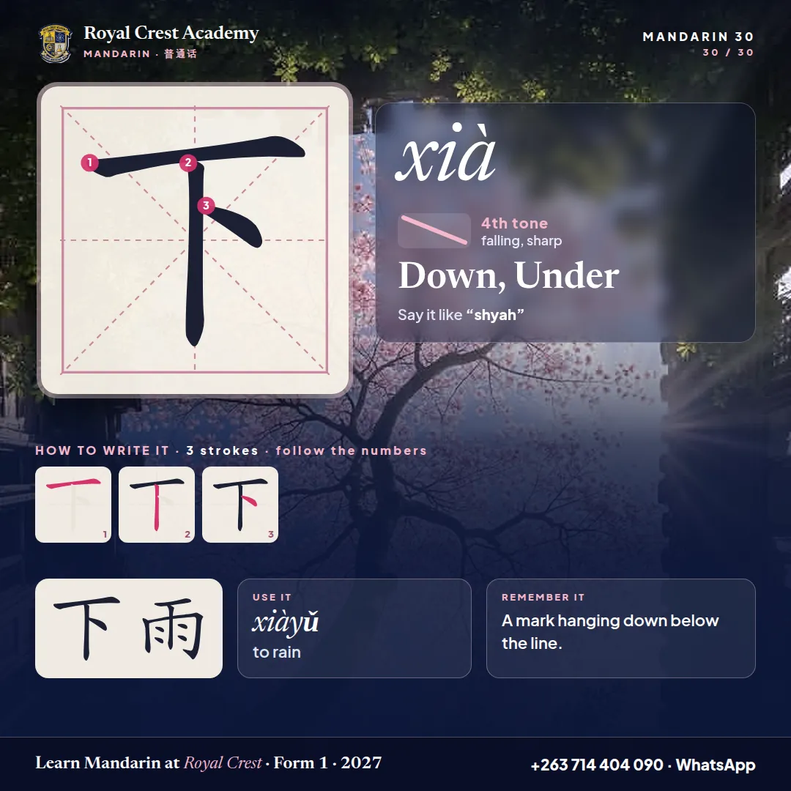
30/303 strokes
下 xià · down, under
🌸 Mandarin 30 · 30/30: 下 (xià) = down, under
🗣 Say it: xià, 4th tone (falling). Sounds like “shyah”.
✍️ Write it: 3 strokes. Follow the numbers on the flyer, in order.
📖 Use it: 下雨 (xiàyǔ) = to rain
💡 Remember it: A mark hanging down below the line.
Practise it 5 times in your notebook, then say it out loud. Comment the character when you've written it! 👇
Learn Mandarin at Royal Crest Academy from Form 1. 🎓 2027 enrolment open · 📞 +263 714 404 090 (WhatsApp)
#RoyalCrestAcademy #Mandarin #LearnChinese #普通话 #汉字 #Mandarin30 #Bikita #Masvingo
Background photos: @wnomps on Instagram. Stroke-order data: Make Me a Hanzi (Arphic Public License).